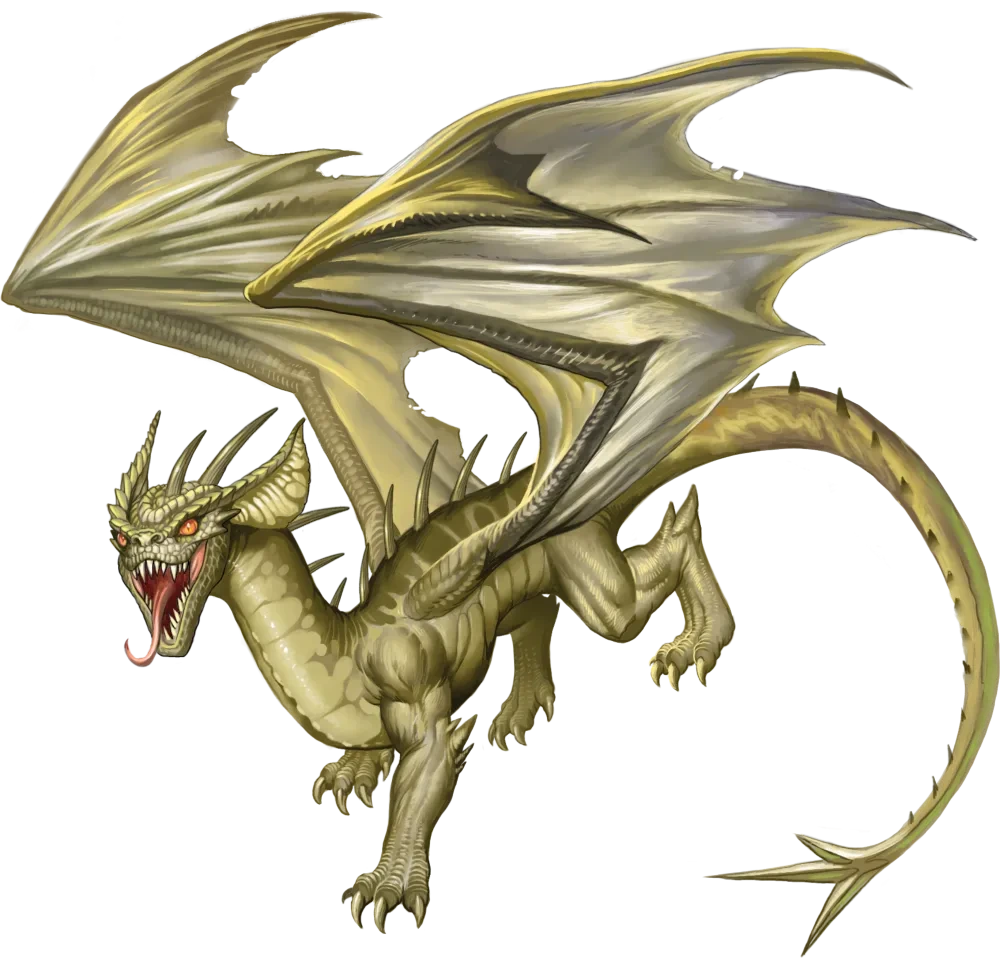
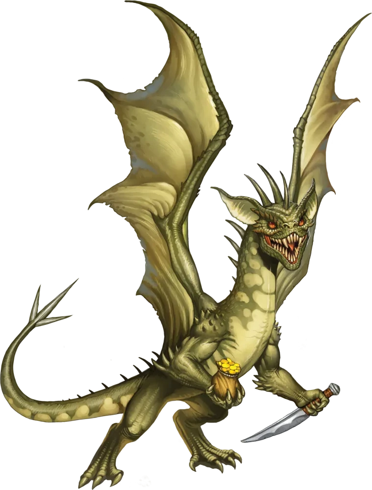
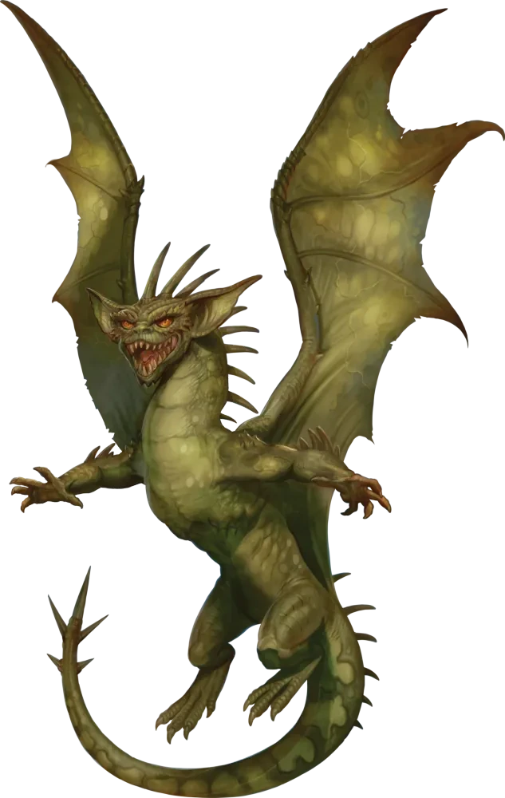

|
巨龙亘古长存，伟力堪比传说，令世间万族为之敬畏、战栗与向往。在某些文化中，巨龙本身便是力量的象征；而在另一些文化里，它们则是王权的先驱。但对巨龙而言，这不过是它们的本色而已。这一朴素的真理从根本上塑造了巨龙与其他种族之间的关系。然而，并非所有巨龙都像人类故事书中所描绘的那样，终日沉睡在堆满财宝的洞窟里，坐等某个鲁莽的冒险者斗胆前来觊觎它们的宝库。有时候，冒险者正是巨龙自己！ 你出身于一脉残酷的恶作剧者与睚眦必报的破坏者世系。你属于仙灵龙家族的一员。你的关联伤害类型由你在强酸或毒素之间自选其一（在你首次选择诡谑龙血统时选定，此后不可更改），且你的吐息武器为宽 5 尺、长 30 尺线状的腐蚀呕吐物或恶臭毒气，需进行敏捷豁免（若你的伤害类型为强酸）或体质豁免（若你的伤害类型为毒素）。 巨龙特质属性值提升。你的魅力值提升 2 点。你自选的一项属性值提升 1 点。 年龄。任何年龄段的巨龙都可以举行永恒之光仪式，因此哪怕是一条刚完成仪式的初生永光龙，严格来说也可能已经活了数千岁。不过，仪式澎湃的魔法能量会洗去衰老的痕迹。从仪式中苏醒的初生永光龙洋溢着青春活力与无限潜能。尽管部分学者持不同看法，但只要不死于暴力或其他灾祸，永光龙的寿命与传统派巨龙同样漫长。 阵营。永光龙的龙族血统会强烈影响其信念，但影响程度远不如同血统的传统派巨龙。例如，银永光龙往往是善良的捍卫者，而黑永光龙则往往狡诈刻薄。然而，永光龙深知龙脉并非不可违逆的宿命。任何永光龙都可以完全抛弃先祖的旧习，去开拓属于自己的道路。 体型。除非一条永光龙将自身魔力专注于增大体型（许多永光龙都会这样做），否则它们的体型并不会比常见的类人种族更大。你的体型可在小型或中型之间自选。 速度。你的基础步行速度为 30 尺。 黑暗视觉。你同样具备传统派巨龙的敏锐感官。在距离你 60 尺范围内，你可以将微光光照视作明亮光照，将黑暗视作微光光照。你在黑暗中无法分辨颜色，只能看到灰度的影像。 龙之馈赠。你从巨龙职业所列的龙之馈赠中获得一项龙之馈赠。如果某项馈赠具有先决条件，你必须满足其先决条件才能获得它。 龙类。你的生物种类为龙类，而非类人生物。 天生武器。除常规的徒手打击外，你还获得两种天生武器攻击：啃咬攻击与爪击攻击。你的啃咬攻击造成 1d6 点穿刺伤害；你的爪击攻击造成 1d4 点挥砍伤害。 你必须至少有一只手空闲才能发动爪击攻击。 你在进行爪击攻击的攻击检定和伤害掷骰时可以使用敏捷代替力量，但啃咬攻击不适用。 语言。你能够说、读、写通用语和龙语。 破坏者。你获得一套自选工匠工具的熟练项。当你使用所选工具进行属性检定以制造恶作剧或混乱破坏时，该检定具有优势。 永光诡谑龙背景设定诡谑龙过着快节奏而刺激的生活。尽管它们对于肆意破坏、捉弄他人和实施报复有着无穷无尽的耐心，但在生活的其他方面却往往急不可耐。正因如此，在所有巨龙之中，它们是最有可能举行永恒之光仪式的一群。完成蜕变之后，永光诡谑龙依旧我行我素地过着往常的日子，日常起居几乎看不出什么实质性的变化。 诡谑龙彼此之间往往把对方当成顽劣的兄弟姐妹――既是残酷恶作剧的潜在目标、相互较劲的竞争对手，（偶尔）也是为了干出一番单凭一己之力无法企及的惊天大事而联手的盟友。有时，它们甚至愿意向陷入险境的另一条诡谑龙施以援手――通常是靠布置陷阱和其他蓄意破坏手段――以此证明自己才是更高明的恶作剧大师。从传统派诡谑龙向永光诡谑龙的转变并不会过多改变这种相处模式。传统派诡谑龙对待永光同族的态度与其他诡谑龙并无二致，也不会因为对方举行了仪式就看低一等――衡量一条诡谑龙价值的标准始终在于其恶作剧、陷阱与操纵人心的本领，而不在于它究竟通过何种途径获得了这份技艺与力量。 诡谑龙最倾向于修习那些能够强化其捉弄他人与布置陷阱能力的职业。游侠和游荡者在它们之中十分常见，而在那些具备魔法天赋的个体里，吟游诗人和术士也颇为普遍。专注于离间挑拨与社交破坏的诡谑龙则大多成为游荡者或吟游诗人。它们对死啃书本、潜心苦读或自我修养毫无耐心，几乎绝不会成为牧师、武僧、法师或其他学者型、冥思型的角色。诡谑龙永远最先且最相信自己，但通常也乐于结群行动。它们最喜欢统领一支捣蛋鬼大军或帮派发号施令，同时也将大多数精类、侏儒和半身人视作好用的爪牙。它们还经常与其他诡谑龙联手或较量，并对此乐此不疲。 无论选择何种职业，诡谑龙都是难以相处、更难深交的对象，因为它们把残酷的把戏与恶作剧用在了同伴身上的次数，丝毫不亚于用在敌人身上――有时甚至犹有过之。若想与一条诡谑龙长久同行，要么得有极强的忍耐力、冷漠无视的心态、玩世不恭的脾性或同样残忍的心肠，要么就得具备高超的操纵手腕。因此，诡谑龙的友谊往往十分短暂，最适合参与一锤子买卖、充当佣兵团的临时成员，或是加入一支毫不在乎名声的残酷冒险小队。 无论一条诡谑龙是与终生挚友并肩，还是与临时搭档共事，它都时刻预料着自己会遭到背叛、欺骗、愚弄与操纵――毕竟它自己无时无刻不在对别人干这种事，自然也觉得别人会如法炮制地回敬它。它们并不认为这是什么坏事，反而觉得那些从不试图算计自己的家伙相当无趣，抑或是正在酝酿一场放长线钓大鱼的惊天骗局。诡谑龙时刻对诡计保持警惕，尽管嘴上绝不肯承认，但巧妙的恶作剧或把戏往往能令它们暗自折服，尤其是伴以当面嘲弄或滑稽羞辱的杰作――哪怕吃瘪的正是它们自己。捉弄一条诡谑龙必定会引发一场可能持续数十年的恶作剧大战，但这往往更像是惺惺相惜的较劲，而非真正的深仇大恨。 学者的最大噩梦鉴于诡谑龙较高的繁衍率以及它们对永恒之光仪式相对浓厚的偏好，它们本应是收集永恒之光仪式珍贵数据的绝佳来源……只可惜它们偏偏是诡谑龙。眼睁睁看着这座潜在的学术价值金矿白白荒废，实在令我痛心疾首――诡谑龙向来以戏耍前来调查的学者而臭名昭著；它们聪明得很，懂得如何在配合调查与问卷时恶意捣鬼，把数据搅得一团糟甚至彻底报废。相比之下，其他那些难以量化的巨龙至少在作恶时坦率得多――它们通常会直接试图宰掉访谈者。 延伸阅读：对应怪物图鉴：诡谑龙 ・ 主书通用巨龙种族特质 ・ 巨龙职业 ・ 本卷新增龙之馈赠 |
 诡谑龙（Mischief Dragon）  诡谑龙  诡谑龙 |